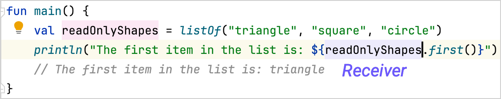

在这一章中, 你将探索一些特殊的 Kotlin 函数, 它们能够让你的代码更加简洁, 更加易读. 学习这些函数能够如何帮助你使用高效的设计模式, 将你的项目提升到更高水平.
扩展函数
在软件开发中, 你经常需要修改一个程序的行为, 但又不能修改原来的源代码. 例如, 你可能想要向一个来自第三方库的类添加额外的功能.
你可以通过添加 扩展函数 来扩展一个类. 调用扩展函数的方式与调用类的成员函数一样, 使用点号 ..
在介绍扩展函数的完整语法之前, 你需要理解什么是 接受者(Receiver). 接受者(Receiver)是指函数对哪个对象调用. 换句话说, 接受者就是共享信息的来源.

在这个示例中, main() 函数调用 .first() 函数, 得到列表中的第 1 个元素. .first() 函数 对 readOnlyShapes 变量调用, 因此 readOnlyShapes 变量就是接受者.
要创建扩展函数, 请写下你想要扩展的类名称, 之后是一个 . 号, 之后是你的函数名称. 后面是函数声明的其余部分, 包括它的参数和返回类型.
例如:
fun String.bold(): String = "<b>$this</b>"
fun main() {
// "hello" 是接受者
println("hello".bold())
// 输出结果为: <b>hello</b>
}在这个示例中:
String是被扩展的类.bold是扩展函数的名称..bold()扩展函数的返回类型是String."hello", 一个String实例, 是接受者.在函数的 body 部, 访问接受者时使用了 关键字:
this.使用了字符串模板 (
$) 来访问this的值..bold()扩展函数接受一个字符串, 并将它包含在<b>HTML 元素内返回, 用于显示粗体文字.
面向扩展的设计
你可以在任何地方定义扩展函数, 因此可以创建面向扩展的设计. 这样的设计将核心功能与便利但并非必须的功能分离开, 让你的代码易于阅读和维护.
一个很好的例子是 Ktor 库的 HttpClient 类, 它帮助你执行网络请求. 它的核心功能是单个函数 request(), 它的参数是一个 HTTP 请求需要的所有信息 :
class HttpClient {
fun request(method: String, url: String, headers: Map<String, String>): HttpResponse {
// 网络代码
}
}在实际运用中, 最常用的 HTTP 请求是 GET 或 POST 请求. 库为这些常见的使用场景提供更短的名称是很合理的. 但是, 不需要编写新的网络代码, 只需要特定的请求调用. 换句话说, 这些请求很适用定义为单独的 .get() 和 .post() 扩展函数:
fun HttpClient.get(url: String): HttpResponse = request("GET", url, emptyMap())
fun HttpClient.post(url: String): HttpResponse = request("POST", url, emptyMap())这些 .get() 和 .post() 函数扩展了 HttpClient 类. 由于它们是在 HttpClient 类的实例上调用的, 也就是使用 HttpClient 类的实例作为接受者, 因此它们可以直接使用来自 HttpClient 类的 request() 函数. 你可以通过这些扩展函数, 使用适当的 HTTP 方法调用 request() 函数, 这样可以简化你的代码, 让代码更加易于理解:
class HttpClient {
fun request(method: String, url: String, headers: Map<String, String>): HttpResponse {
println("Requesting $method to $url with headers: $headers")
return HttpResponse("Response from $url")
}
}
fun HttpClient.get(url: String): HttpResponse = request("GET", url, emptyMap())
fun main() {
val client = HttpClient()
// 直接使用 request(), 发起 GET 请求
val getResponseWithMember = client.request("GET", "https://example.com", emptyMap())
// 使用 get() 扩展函数, 发起 GET 请求
// client 实例是接受者
val getResponseWithExtension = client.get("https://example.com")
}在 Kotlin 的 标准库 和其他库中, 大量使用了这种面向扩展的方案. 例如, String 类有很多 扩展函数 帮助你处理字符串.
关于扩展函数, 详情请参见 扩展.
实际练习
习题 1
编写一个扩展函数, 名为 isPositive, 接受一个整数参数, 判断它是不是正数.
fun Int.// 请在这里编写你的代码
fun main() {
println(1.isPositive())
// 输出结果为: true
}参考答案
fun Int.isPositive(): Boolean = this > 0
fun main() {
println(1.isPositive())
// 输出结果为: true
}习题 2
编写一个扩展函数, 名为 toLowercaseString, 接受一个字符串参数, 返回它的小写形式.
- 提示
使用
String类型的.lowercase()函数.
fun // 请在这里编写你的代码
fun main() {
println("Hello World!".toLowercaseString())
// 输出结果为: hello world!
}参考答案
fun String.toLowercaseString(): String = this.lowercase()
fun main() {
println("Hello World!".toLowercaseString())
// 输出结果为: hello world!
}